All in One View
Content from Introduction to Data Visualization
Last updated on 2026-06-16 | Edit this page
Estimated time: 75 minutes
Overview
Questions
- What is data visualization and how does it differ from simply displaying charts?
- Why do humans process visualized data so much faster than raw numbers or tables?
- What are the advantages and risks of using visuals in data analysis?
- How does visualization help when working with big data?
- Which tools are most suitable for beginners, intermediate users, and advanced programmers?
- What makes a visualization “good” versus “misleading”?
Objectives
- Define data visualization and explain its core purpose
- Distinguish between exploratory and explanatory visualizations with real-world examples
- Describe at least five advantages and three disadvantages of data visualization
- Describe how visualization addresses challenges posed by big data
- Compare popular open-source and commercial tools for creating visualizations
- Recognize key principles of effective visualization design
- Understand ethical considerations and accessibility best practices
- Data visualization turns numbers into stories that the human brain can understand quickly.
- Good visualizations reveal patterns, trends, and outliers that are invisible in spreadsheets.
- Poor design can mislead audiences more powerfully than raw data ever could.
- Big data demands interactive, scalable, and often multi-dimensional visualizations.
- Choose the right tool for your audience and skill level — start simple and iterate.
- Always prioritize clarity, honesty, and accessibility over visual flair.
What Is Data Visualization?
Data visualization is the graphical representation of information and data. Instead of showing rows and columns of numbers, it uses charts, graphs, maps, diagrams, and interactive dashboards to make patterns, trends, relationships, and outliers immediately understandable.
Think of it as data storytelling with graphics. A well-designed visualization does in seconds what a 10-page spreadsheet cannot: it lets the human brain — which processes images 60,000 times faster than text — grasp complex information at a glance.
In the Carpentries context, data visualization is not just “making pretty pictures.” It is a core skill that bridges data wrangling (covered in previous episodes) and data-driven decision making.
There are two broad modes of visualization, and knowing which one you are doing shapes every design decision:
- Exploratory visualizations help you discover insights while analyzing data — quick, rough, and disposable.
- Explanatory visualizations help others understand your discoveries — polished, annotated, and purposeful.
Why Visualize Data?
Our brains devote more than 50% of their processing power to vision. This means a well-chosen chart is not just convenient — it is cognitively more efficient than a table for most tasks. Visualization matters because it:
- Reveals what numbers hide — trends over time, clusters, correlations, outliers, geographic patterns, and distributions are rarely obvious in raw data but leap out in a well-chosen chart.
- Enables faster decision-making — executives, scientists, journalists, and policymakers routinely use visualizations to justify budgets, publish findings, or inform public opinion.
- Democratizes data — a clear chart can be understood by domain experts and non-technical stakeholders alike, lowering the barrier to engaging with evidence.
- Supports error detection — visuals often surface data quality problems (missing values, impossible ranges, duplicate records) that automated checks miss entirely.
Advantages and Disadvantages
Understanding both sides helps you use visualization responsibly.
Advantages
- Speed: Spot trends in seconds rather than hours of table-reading.
- Clarity: One well-designed image can replace thousands of numbers and reduce cognitive load significantly.
- Pattern recognition: Humans excel at detecting lines, clusters, and shapes — abilities that do not transfer well to reading numbers.
- Engagement: Interactive or well-designed visuals capture attention and improve information retention.
- Storytelling power: Visualization turns dry statistics into compelling, memorable narratives.
- Accessibility across audiences: Good visuals communicate across language barriers and varying technical skill levels.
Disadvantages and Risks
- Misleading results: A truncated y-axis, 3D perspective effects, or cherry-picked color scales can distort the truth — sometimes dramatically.
- Chartjunk (Edward Tufte’s term): Decorative elements that add visual noise without adding information, such as unnecessary gridlines, shadows, or clip art.
- Time investment: Creating a professional, publication-ready visualization can take longer than the underlying analysis.
- Skill gap: Effective visualization requires both analytical thinking and design sensibility — a combination that takes practice to develop.
- Over-simplification: Reducing a complex multi-variable relationship to a single chart can flatten important nuance into something misleading.
- Accessibility barriers: Poor color contrast, the absence of alt text, or reliance on color alone to encode information excludes users with color blindness or who use screen readers.
The “Lying With Charts” Phenomenon
Visual choices that seem minor — axis scale, color palette, which data points to include — can completely change what a chart appears to say. Always ask yourself: “Does this visual tell the whole story, or just the story I want to tell?”
Big Data and the Need for Visualization
The explosion of big data — characterized by high volume, velocity, variety, and veracity — has made visualization not just helpful, but essential.
- Volume: A dataset with one million rows is impossible to read. A heatmap or density plot can show the entire distribution at a glance.
- Velocity: Real-time dashboards (stock markets, public health trackers, IoT sensor networks) must update continuously and communicate change instantly.
- Variety: Combining structured tables, free text, imagery, and geospatial data requires multi-layered visuals — for example, a choropleth map with an overlaid time-series.
- Dimensionality: With 50 or more variables, techniques like PCA, t-SNE, or parallel coordinates plots are needed to reduce complexity without losing meaning.
Modern big-data visualizations are generally:
- Interactive — users can zoom, filter, and hover for tooltips rather than reading a static snapshot.
- Scalable — capable of rendering millions of data points without crashing the browser or notebook.
- Collaborative — built on shared dashboard platforms (Tableau Server, Power BI, Plotly Dash) so teams can explore the same data together.
Real-World Examples
Simple but powerful
- Line chart: Global average temperature rise from 1880 to present — a single trend line communicates over a century of climate data immediately.
- Bar chart: Top 10 countries by share of renewable energy, ranked — comparisons across categories are instant.
- Scatter plot: Study hours versus exam scores with a regression line — reveals both the relationship and individual variation.
More advanced
- Heatmap: Correlation matrix of 20 genomics variables — shows which pairs of variables are related without producing 190 individual scatter plots.
- Treemap: Company revenue broken down by department and region — shows both composition and relative size simultaneously.
- Network graph: Social media follower connections or protein interaction maps — structures that have no natural x/y axis.
- Choropleth map: COVID case rates or election results by county — geographic patterns that are invisible in a table.
- Animated bubble chart (Hans Rosling style): 200 years of global health and wealth data — adds time as a dimension without requiring 200 separate charts.
Good vs. Bad
Look at the two descriptions below and identify what makes one effective and one misleading:
- Chart A: A line chart showing annual global CO₂ emissions from 1960 to present. The y-axis starts at zero, the source is labeled, and the title reads “Global CO₂ Emissions Have Risen Steadily Since 1960.”
- Chart B: A 3D exploding pie chart with 12 color-coded slices, no legend, a y-axis that starts at 94%, and a title that reads “Our Product Dominates the Market.”
What specific design choices in Chart B make it misleading? What would you change?
Popular Tools — From Beginner to Advanced
| Skill Level | Tool / Library | Best For | Open Source? | Carpentries Recommendation |
|---|---|---|---|---|
| Beginner | Excel / Google Sheets | Quick bar, line, and pie charts | No | Great starting point |
| Intermediate | Python + Matplotlib | Publication-quality static plots | Yes | Highly recommended |
| Intermediate | QGIS (uses Python) | Publication-quality static maps | Yes | Highly recommended |
| Advanced | R + ggplot2 | Statistical graphics | Yes | Data Carpentry favorite |
| Advanced | JavaScript + D3.js | Fully custom web visualizations | Yes | For web developers |
In this workshop we focus primarily on QGIS and Python because these tools integrate directly with the data-cleaning and analysis skills that we will be covering today.
Principles of Effective Visualization
These principles draw on the work of Edward Tufte, William Cleveland, and Alberto Cairo:
- Maximize the data-ink ratio — every drop of ink (or pixel) should carry information. Remove gridlines, borders, and decorations that do not contribute.
- Use small multiples instead of overloading a single chart with too many variables or series.
- Choose the right chart type for the message — bar charts for comparison, lines for trends, scatter plots for relationships. Avoid pie charts with more than four or five slices.
- Label everything clearly — titles, axis labels, legends, and units should never require guessing.
- Be honest about scale — never truncate axes without a clear disclosure; never use 3D effects that distort area or angle.
- Choose colors deliberately — use colorblind-friendly palettes such as ColorBrewer or viridis; avoid rainbow scales that imply ordering where none exists.
- Make it accessible — provide alt text for images, ensure sufficient contrast ratios, and encode information with shape or pattern in addition to color alone.
- Guide the viewer — use titles, subtitles, and annotations to direct attention and make the main takeaway explicit.
Ethical Considerations
Visualizations can influence policy, investment decisions, and public opinion at scale, which creates real responsibility:
- Avoid cherry-picking: Selecting only the time window or data subset that supports your conclusion is a form of dishonesty, even if every data point shown is accurate.
- Disclose sources and limitations: Readers cannot evaluate a chart they cannot trace back to its data. Always cite the source and note key caveats (sample size, date range, missing data).
- Respect privacy: Geospatial and demographic data can expose individuals even when names are removed. Consider aggregation levels carefully.
- Consider unintended consequences: A map of crime rates, for example, can reinforce harmful stereotypes if presented without context about policing patterns or historical disinvestment.
Challenges You Will Face
| Challenge | Recommended approach |
|---|---|
| Too many variables to show at once | Use dimensionality reduction (PCA, t-SNE) or faceting (small multiples) |
| Slow rendering with millions of data points | Sample the data, pre-aggregate, or use WebGL-based tools like Datashader |
| Plots that can’t be reproduced later | Always save the code that generated the image alongside the image file |
| Tracking how a visualization changes over time | Store plots and notebooks in version control (Git) |
| Color choices that exclude colorblind users | Test palettes with a simulator; default to viridis or ColorBrewer sequential schemes |
| Audiences with different technical backgrounds | Provide layered detail — a clear headline finding up front, supporting data behind a click or in an appendix |
Content from Cartography Checklists
Last updated on 2026-06-16 | Edit this page
Estimated time: 75 minutes
Overview
Questions
- Who is the primary audience for your map?
- What message or story are you trying to communicate?
- Which data attributes are most important to show?
- How will your audience interpret or react to your map?
- What medium will your map be presented in (web, print, presentation)?
- Will your map be used to inform decisions?
- What does your audience already know, and what do they need explained?
- Do you need more data to support your map?
- Do you fully understand the topic you are mapping?
Objectives
- Identify the purpose and audience of a map before starting design
- Choose appropriate data and variables to support your message
- Design maps that communicate clearly, honestly, and accessibly
- Evaluate whether additional data or context is needed
- Apply a checklist-based approach to cartographic design decisions
- Always define your audience and message before making any design decisions.
- Not all data belongs on a map — choose variables that are spatially meaningful and support your story.
- Design choices (color, scale, symbology) are never neutral; they shape how readers interpret your map.
- Match your map’s complexity and medium to what your audience needs and expects.
- If your map informs decisions, accuracy, transparency, and uncertainty communication are critical.
- Run through the cartography checklist before finalizing any map.
Why Thoughtful Map Design Matters
Maps are powerful tools for communication. A well-designed map can reveal spatial patterns, support decisions, and tell compelling stories. A poorly designed map can mislead, confuse, or hide important insights.
Before making a map, it is essential to ask the right questions. Good cartography is guided by a set of core design principles:
- Legibility — the map is easy to read at its intended size and medium
- Visual contrast — important elements stand out from the background
- Figure-ground — the main features pop from the background clearly
- Hierarchy — the most important information is visually prominent
- Balance — the layout feels organized without clutter
These principles interact with every decision you make, from color palette to label placement. The nine sections below translate them into concrete questions you should answer before finalizing any map.
1. Know Your Audience
Your audience determines everything — the level of detail, the choice of terminology, the complexity of symbology, and even whether a legend needs to define basic terms.
Ask yourself
- Are they experts, policymakers, or the general public?
- How familiar are they with maps and with your specific topic?
- What level of detail is appropriate, and what would overwhelm them?
Examples
- General audience → simple labels, clear legend, minimal jargon, large text
- Scientific audience → more detail, precise scale bars, technical terminology, data source citations
Key Idea
A map designed for scientists and a map designed for the general public should not look the same — even if they show identical data. Tailor every design choice to the reader, not to the data.
2. Define Your Message
Every map should answer a single, clearly stated question. Maps that try to show everything end up communicating nothing.
Ask yourself
- What is the one most important takeaway a reader should leave with?
- Are you showing spatial patterns, comparisons between places, or change over time?
- Can you state the map’s purpose in a single sentence?
3. Choose the Right Data Attributes
Not all data belongs on your map. Only include variables that are spatially meaningful and directly support your stated message.
Ask yourself
- Which single variable is most important to show?
- Are there supporting variables (e.g., population, elevation) that add necessary context without cluttering the map?
- Is the data type appropriate for the geometry — points for discrete locations, lines for networks, polygons for areas?
Visual encoding guidelines
| Visual variable | Best used for | Example |
|---|---|---|
| Color hue | Categories (nominal data) | Land use types |
| Color value (light → dark) | Magnitude (ordinal or continuous data) | Rainfall amount |
| Size | Quantities at point locations | City population |
| Shape | Distinguishing symbol types | Hospitals vs. schools |
| Pattern / texture | Categories on print maps | Zoning districts |
Quick Check
You have three variables available: temperature, precipitation, and elevation.
Your goal is to create a map that highlights areas at greatest drought risk.
- Which variable would you prioritize as your primary encoded attribute?
- Which (if any) would you include as supporting context?
- Which would you leave off entirely, and why?
4. Consider Audience Perception
Maps are never neutral. Every design choice — color, scale, projection, classification method — shapes how readers interpret what they see. Being aware of this is not optional; it is part of responsible cartography.
Ask yourself
- Could your color choices carry unintended connotations (e.g., red implying danger, green implying safety)?
- Are you inadvertently introducing bias through classification breaks or data selection?
- Can the map’s main message be grasped within a few seconds?
Common perception pitfalls
- Color value confusion: Using very light colors for high values (or vice versa) contradicts most readers’ intuition that darker = more.
- Unequal class intervals: A choropleth using natural breaks will look very different from one using equal intervals on the same data — neither is “correct,” but the choice must match your message.
- Colorblind inaccessibility: Approximately 8% of men and 0.5% of women have some form of color vision deficiency. Red-green combinations are the most common problem. Always test your palette.
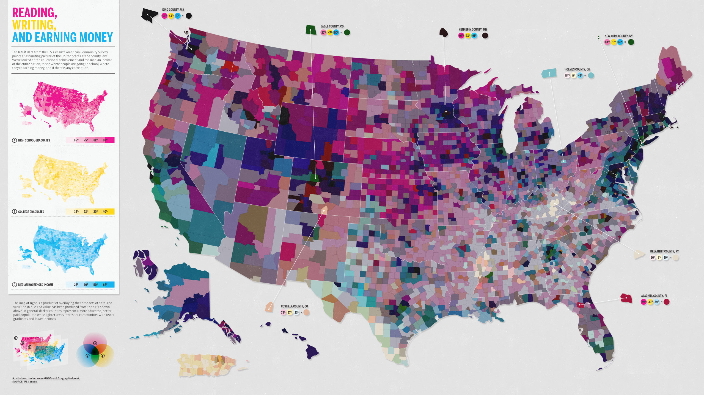
Best practice: Establish clear contrast between your data layer (foreground) and the basemap (background). Use figure-ground techniques — such as a lighter or desaturated basemap — so your data stands out without competition.
5. Choose the Right Medium
Where and how your map will be displayed has a direct effect on every design decision, from font size to layer complexity.
Common display contexts
- Web maps → interactive and zoomable; can include multiple layers, tooltips, and filters
- Print maps → static and fixed-resolution; require careful attention to font size, line weight, and color accuracy across printers
- Presentation slides → typically viewed from a distance; need bold, simple visuals with large text and minimal fine detail
Ask yourself
- Will users be able to zoom in, or is this a fixed view?
- Could the map be printed in black and white? If so, does it still work?
- How large will the map appear in its final context — full screen, half a slide, a column in a report?
Web tip: Simplify basemaps and add halos (outlines) behind text labels so they remain readable over varied background colors. Print tip: Always test a physical proof before finalizing — colors on screen differ from colors on paper.
6. Will Your Map Inform Decisions?
Some maps are purely exploratory tools for the analyst. Others are used by planners, health officials, emergency managers, or the public to make real-world decisions. The stakes of design errors are very different in each case.
Decision-making maps should
- Be as accurate as the underlying data allows
- Communicate uncertainty explicitly (e.g., confidence intervals, data vintage, known gaps)
- Avoid simplifications that could lead to misinterpretation with serious consequences
- Be reviewed by a domain expert before publication
Examples
- Flood-risk maps used by city planners to determine zoning regulations
- Public health maps showing disease outbreak locations used by response teams
- Wildfire evacuation route maps used by emergency services
Important
If your map could influence a policy, resource allocation, or safety decision, treat accuracy and clarity as non-negotiable. Include a data source citation, a date, and any relevant caveats directly on the map.
7. Understand Your Audience’s Knowledge
Even a technically accurate map fails if the audience cannot decode it. Match your map’s language and symbology to what your readers already understand.
Ask yourself
- Do your readers understand the variables and units you are using?
- Do you need to explain what the color scale represents, or will they infer it correctly?
- Would annotations or a short explanatory text block help orient the reader?
Tips
- Always include a legend for any encoded variable
- Use plain language in labels and titles wherever possible
- Provide temporal context (e.g., “Data from 2021 ACS 5-Year Estimates”)
- Cite your data source directly on the map, not just in a caption
- Include a scale bar whenever distance relationships matter
- Include a north arrow if map orientation is not immediately obvious from context
Pro tip: Aim for “maximum information at minimum effort.” The reader should grasp the map’s main message within a few seconds, without having to search for the legend or decode ambiguous symbology.
8. Do You Need More Data?
A map built on incomplete data can be accurate in what it shows while being misleading about what it omits. Missing data, outdated data, or insufficient spatial resolution can all undermine your conclusions.
Ask yourself
- Are there variables absent from your dataset that a reader would need to interpret your map correctly?
- Is your data current enough for the decision or story it will support?
- Is the spatial resolution (e.g., county vs. census tract vs. block group) appropriate for the patterns you are trying to show?
Example
The two maps below illustrate why supporting context matters. The income map alone suggests a clear geographic pattern — but without the population density map alongside it, a reader might draw incorrect conclusions about why that pattern exists.
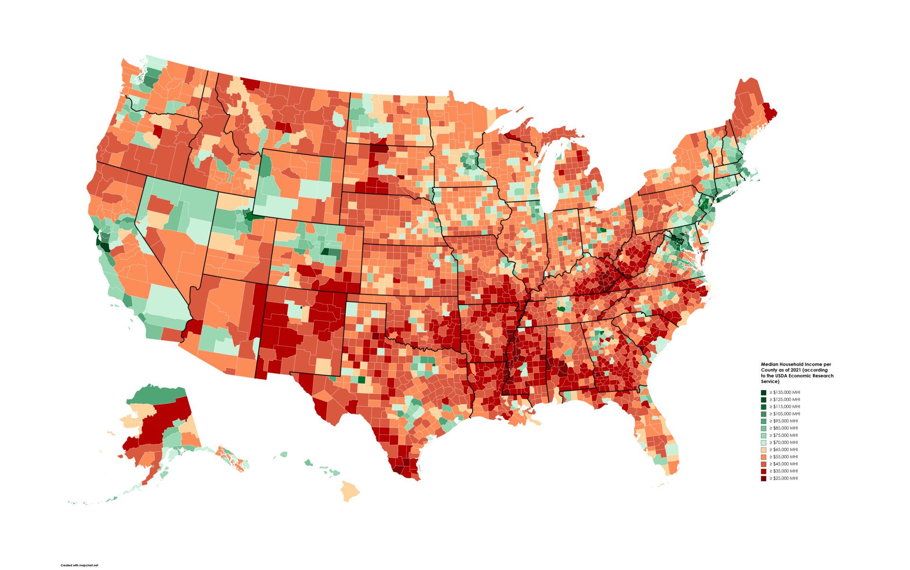
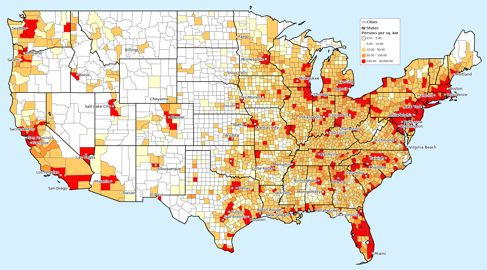
9. Do You Understand Your Data?
Before mapping, you should have a thorough understanding of the dataset itself — not just the spatial layer but what each variable actually measures, how it was collected, and where it may be unreliable.
Ask yourself
- What does each variable represent, and at what level of aggregation?
- Are there known biases, gaps, or limitations in the data collection methodology?
- Have you explored the data with summary statistics and distributions before committing to a map?
If the answer to any of these is “not yet”
- Perform exploratory data analysis (EDA) first — histograms, summary statistics, and scatter plots before you touch a spatial layer
- Read the metadata and any accompanying documentation carefully
- Look up the source methodology online or consult a domain expert
- For high-stakes maps, consider sensitivity testing: does the pattern change meaningfully if you use a different classification scheme or exclude outliers?
Cartography Checklist
Before finalizing your map, work through this checklist. If you cannot check a box, revisit that section above before publishing.
Final Thought
A good map is not just visually appealing — it is honest, clear, and purposeful. It respects the data, serves the audience, and communicates effectively without distortion.
Content from Fundamentals of Map Design
Last updated on 2026-06-16 | Edit this page
Estimated time: 105 minutes
Overview
Questions
- What is a map and what makes it effective?
- How do visual hierarchy and design influence interpretation?
- How should colors and symbols be used in maps?
- What are map scales and projections, and why do they matter?
- What are common thematic map types and when should you use them?
- Should your map be static or interactive?
- How should data be classified for choropleth maps?
Objectives
- Understand the core components and elements of an effective map
- Apply visual hierarchy principles to improve clarity and guide the viewer
- Select appropriate colors, symbols, scales, and projections for your data
- Identify and correctly use different thematic map types
- Choose between static and interactive maps based on your purpose
- Select appropriate data classification methods for choropleth maps
- A map is a communication tool — every design decision should serve a clear purpose.
- Visual hierarchy, color, and symbology guide what the reader notices and how they interpret it.
- No projection is perfect; choose based on what property (area, shape, distance) matters most for your message.
- Match your thematic map type to your data type — choropleth for normalized rates, proportional symbols for magnitudes, dot density for distributions.
- Classification method choice can dramatically change what a choropleth appears to say; always choose intentionally.
- Use interactive maps for exploration; use static maps to communicate a single clear message.
What is a Map?
A map is a visual representation of spatial data designed to communicate information about locations, patterns, and relationships.
A good map:
- Has a clear purpose
- Accurately represents data
- Is easy to interpret
- Minimizes misleading elements
- Includes all essential map elements (title, legend, scale bar, north arrow, data source)
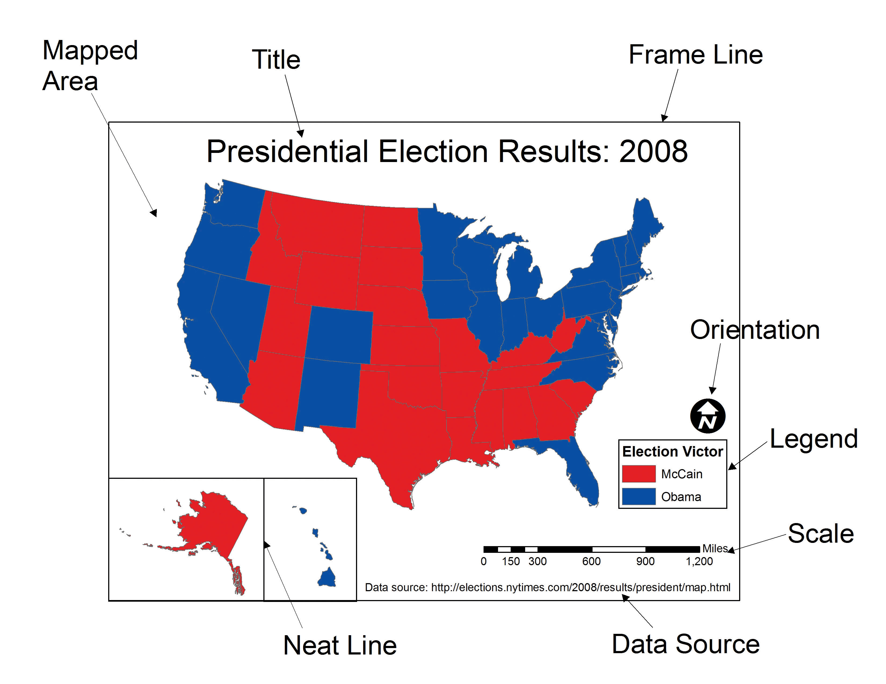
Key Idea
A map is not just a picture — it is a communication tool. Every element you include (or omit) sends a message to your reader.
Visual Hierarchy
Visual hierarchy controls what the viewer notices first, second, and last. A well-structured hierarchy guides the reader’s eye toward the most important information without requiring effort on their part.
How to create hierarchy
| Visual tool | Effect | Practical use |
|---|---|---|
| Size | Larger elements draw attention first | Make your primary data layer the most visually prominent |
| Color | Brighter or contrasting colors stand out | Reserve saturated colors for key data; mute the basemap |
| Position | Central elements are noticed before edge elements | Place your main map center-frame; push supporting elements to margins |
| Contrast | Strong differences between elements signal importance | High contrast between data and background keeps the data readable |
Applied example
- Main data layer → bold, saturated colors
- Background basemap → muted, desaturated tones
- Labels → legible but visually subordinate to the data
Analyzing Hierarchy in the Wild
Find any map — in a news article, a textbook, or online.
- What is the first thing your eye goes to?
- Is that the element the mapmaker intended to be most prominent?
- If not, what design choice created the unintended emphasis (color, size, position)?
Visual Variables in Mapping
Cartographic variables (also called visual variables) are the visual properties used to encode data on a map. Choosing the right variable for your data type is one of the most important decisions in map design.
The main visual variables and their appropriate uses
| Visual variable | Best data type | Example |
|---|---|---|
| Color hue (distinct colors) | Categorical / nominal | Land use types, political parties |
| Color value (light → dark) | Quantitative / ordered | Population density, income levels |
| Size | Quantitative at point locations | City population, earthquake magnitude |
| Shape | Categorical at point locations | Hospital vs. school vs. fire station |
| Orientation | Directional data | Wind direction, flow arrows |
| Texture / pattern | Categorical areas (especially print) | Zoning districts, vegetation types |
Colors on Maps
Color is the most powerful visual variable on a map — and the most commonly misused. The right color scheme depends entirely on the type of data you are encoding.
Types of color schemes
- Sequential → for data that runs from low to high values; colors progress from light to dark (e.g., pale yellow → dark red for population density).
- Diverging → for data that varies around a meaningful midpoint such as zero or an average; colors diverge in two directions (e.g., blue–white–red for temperature anomaly).
- Categorical → for data with distinct groups and no inherent order; uses visually distinct hues (e.g., land cover classes).
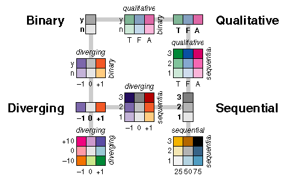
Best practices
- Use lighter shades for lower values and darker shades for higher values in sequential schemes — this matches most readers’ intuition.
- Avoid overly bright or clashing colors, which increase cognitive load and fatigue.
- Always use colorblind-friendly palettes. Approximately 8% of men have some form of color vision deficiency; red-green combinations are the most common problem. Tools like ColorBrewer provide tested, accessible palettes.
- Ensure sufficient contrast between adjacent classes so boundaries are visible without needing to zoom in.
Tip
When in doubt, use ColorBrewer. It provides sequential, diverging, and categorical palettes that are colorblind-safe, print-friendly, and photocopy-safe — with a filter to find schemes that meet all three criteria simultaneously.
Scale
Map scale defines the relationship between a distance measured on the map and the corresponding distance on the ground.
Two types of scale
- Large-scale maps cover a small geographic area with a high level of detail (e.g., a neighborhood street map at 1:5,000). Individual buildings, paths, and features are distinguishable.
- Small-scale maps cover a large geographic area with less detail (e.g., a world map at 1:50,000,000). Only major features such as country borders and major rivers are shown.
Why scale matters
- It determines what level of detail is visible and appropriate to include.
- Features that look correct at one scale can be misleading or meaningless at another — a neighborhood-level pattern should not be inferred from a country-level map.
- Always display a scale bar (not just a ratio) so readers can estimate real-world distances regardless of how the map is printed or displayed.
Projections
A map projection is a mathematical transformation used to represent the curved surface of the Earth on a flat plane. Because it is geometrically impossible to flatten a sphere without distortion, every projection sacrifices at least one spatial property.
The four properties that can be distorted
- Area — regions may appear larger or smaller than they actually are
- Shape — the outlines of regions may be stretched or compressed
- Distance — measured distances may be inaccurate except along specific lines
- Direction — angles and bearings may not be preserved
Common projection families and their trade-offs
| Projection family | What it preserves | Common use |
|---|---|---|
| Equal-area (e.g., Albers, Mollweide) | Area | Thematic maps where region size comparison matters |
| Conformal (e.g., Mercator, Lambert) | Local shape and angles | Navigation, large-scale topographic maps |
| Equidistant (e.g., Azimuthal equidistant) | Distance from a central point | Radial distance maps, some atlases |
| Compromise (e.g., Robinson, Winkel Tripel) | None perfectly, but minimizes all | General-purpose world maps |
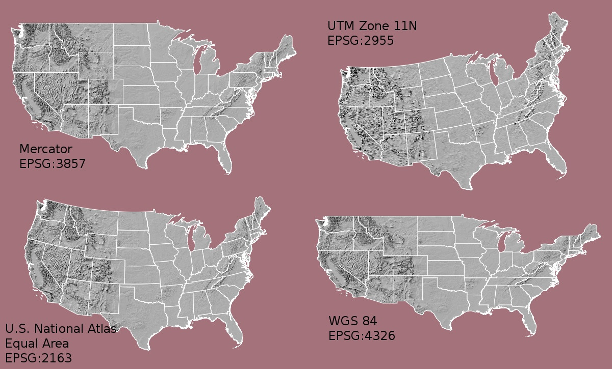
To see just how dramatically the Mercator projection distorts the apparent size of countries, try The True Size Of…. You can drag a country to different latitudes and compare its true size against others. Try dragging Russia down to where Africa sits — the size difference is striking.
Important
There is no universally “correct” projection — only projections suited to specific purposes. For U.S. Census and demographic work, the Albers Equal Area Conic projection is standard because it preserves area relationships between states and counties.
Labeling and Legends
Labels and legends are not optional decoration — they are what transform a spatial image into a readable map. A map without a legend or with ambiguous labels forces the reader to guess.
Labels
- Use a font size and weight that is readable at the intended display size (screen or print).
- Place labels to avoid overlapping other features; offset or use leader lines where needed.
- Apply a visual hierarchy to labels — names of major features should be larger or bolder than minor ones.
- Use halos (white outlines behind text) to keep labels legible over varied backgrounds.
Legends
- Every encoded variable (color, size, symbol shape) must be explained in the legend.
- Keep legend entries concise and use plain language — avoid variable
codes like
B19013_001Ein favor of “Median Household Income.” - Always include units (e.g., “per 1,000 residents” or “USD, 2021”).
- Order legend entries logically — low to high for sequential data, alphabetically for categories.
When to omit map elements
Not every map needs every element. Omit a north arrow if north is obviously up and the audience will know this. Omit a scale bar on schematic or concept maps where exact distance is not the point. However, when in doubt, include it — a reader who does not need it will ignore it; a reader who does need it will be stuck without it.
Thematic Map Types
A thematic map uses visual variables to show the spatial distribution of one or more attributes. Choosing the wrong map type for your data is one of the most common cartographic errors. The sections below describe the most common types, what they are best suited for, and what to avoid.
Choropleth Maps
A choropleth map uses color value (light to dark) to represent a single quantitative attribute aggregated over geographic regions such as counties, states, or countries.
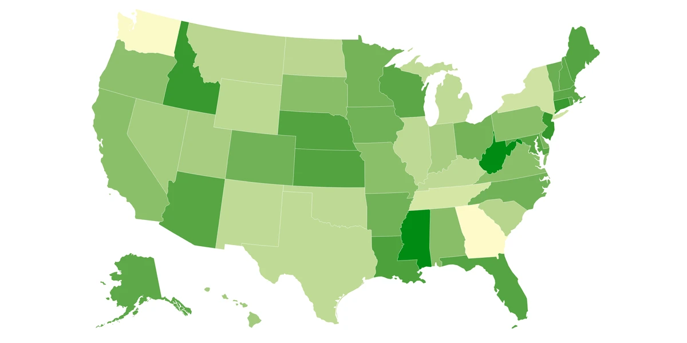
Best for: Rates, ratios, and normalized data — for example, population per square kilometer, median income, or percentage of residents with a college degree.
Avoid for: Raw counts (e.g., total population). Larger regions will almost always have higher raw counts than smaller regions, making the map reflect area size rather than the phenomenon of interest. Always normalize before using a choropleth.
Proportional Symbol Maps
A proportional symbol map scales a symbol (typically a circle) at each location in proportion to the data value at that point.
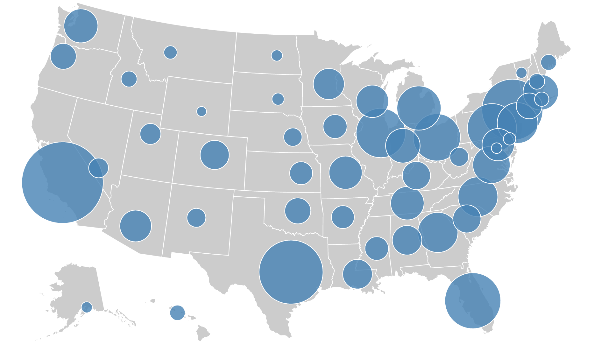
Best for: Comparing absolute magnitudes across discrete locations — for example, total population of cities, number of COVID cases per hospital, or total exports per port.
Avoid for: Continuous phenomena that cover entire regions without discrete point locations.
Dot Density Maps
A dot density map places a fixed number of dots within each geographic unit, where each dot represents a set quantity of the mapped phenomenon.
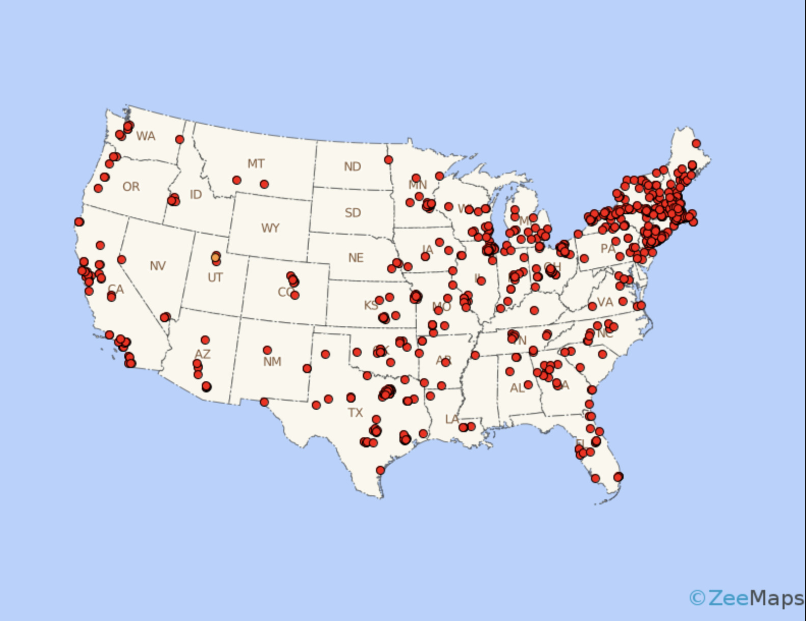
Best for: Showing the spatial distribution and relative density of a phenomenon — for example, one dot = 1,000 people, or one dot = 500 farms.
Avoid for: Precise counts or when the geographic unit boundaries would create artificial clustering effects.
Non-Contiguous Cartograms
A non-contiguous cartogram resizes each geographic region in proportion to a data value, then separates the regions so their recognized outlines are preserved without overlap.
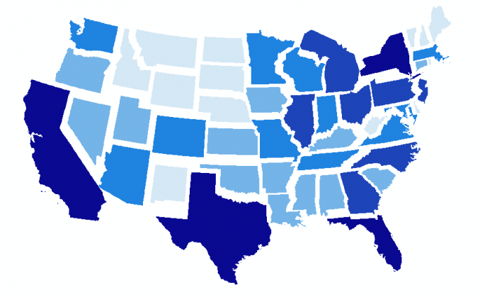
Best for: Emphasizing the magnitude of a phenomenon (such as GDP or electoral votes) when geographic area would otherwise dominate and mislead.
Note: Readers may find cartograms disorienting if they are unfamiliar with the genre. A brief explanatory note in the map caption or title can help.
Multivariate Maps
A multivariate map encodes two or more variables simultaneously using different visual variables — for example, color for one attribute and symbol size for another.
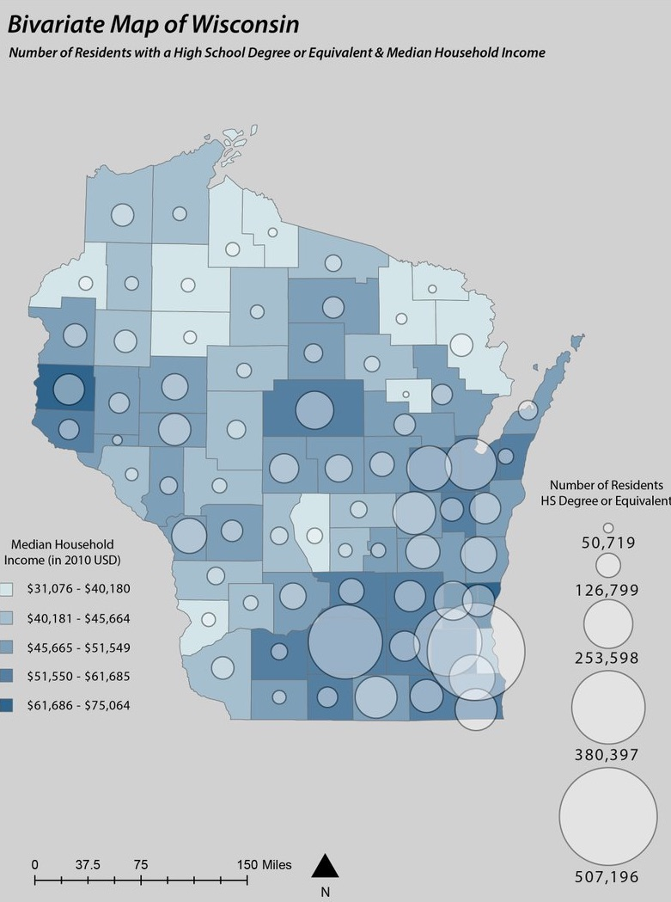
Best for: Exploring the spatial relationship between two variables — for example, income (color) alongside educational attainment (symbol size) to reveal where they correlate or diverge.
Use with caution: Multivariate maps can become visually overwhelming quickly. Limit to two variables when possible, and only add a third if the relationship between all three is genuinely the story you are telling.
Static vs. Interactive Maps
The display context — whether a map will be printed, embedded in a report, or viewed in a browser — is a fundamental design constraint that should be decided before any other design choices are made.
Static maps
- Produce a fixed image (PNG, PDF, SVG) with no user interaction.
- Best suited for print publications, academic reports, and presentations where a single message needs to be communicated clearly.
- Give the mapmaker full control over what the reader sees.
- All the thematic map examples shown above are static maps.
Interactive (web) maps
- Delivered through a browser and allow users to zoom, pan, toggle layers, and hover for tooltips.
- Best suited for exploratory analysis, public-facing data portals, and situations where readers need to look up specific locations.
- Require more development effort and may need ongoing maintenance.
- See a live example on the workshop website — scroll down to find the interactive map of West Lafayette.
Capabilities comparison
| Feature | Static map | Interactive map |
|---|---|---|
| Zoom and pan | No | Yes |
| Layer toggling | No | Yes |
| Hover / click for details | No | Yes |
| Print quality | High | Varies |
| Design control | Full | Partial |
| Development effort | Low | Higher |
| Best for | Single clear message | User-driven exploration |
Guideline
Use interactive maps when readers need to explore, filter, or look up specific values in the data. Use static maps when you want to communicate a single, pre-determined message as clearly as possible.
Data Classification Methods
When creating a choropleth map, continuous numeric data must be grouped into a small number of classes (typically 4–7) so that distinct colors can be assigned. The method used to define those class boundaries has a large effect on the visual pattern the map produces — and therefore on what story it appears to tell.
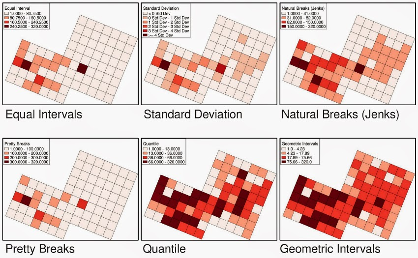
Equal Interval
Divides the full data range into bins of equal width. If income ranges from $25k to $125k and you want 5 classes, each class spans $20k.
- Best for: Data that is roughly evenly distributed across its range.
- Weakness: If data is skewed or clustered, most observations may fall into just one or two classes, leaving others nearly empty.
Quantile
Places an equal number of observations in each class, regardless of the value range each class covers.
- Best for: Comparing the relative rank of places — showing which third or fifth of the distribution each region falls into.
- Weakness: Two regions with very similar values can end up in different classes if they happen to straddle a class boundary.
Natural Breaks (Jenks)
Identifies class boundaries at the natural gaps in the data distribution — the points where the difference between adjacent values is largest. This minimizes within-class variance and maximizes between-class variance.
- Best for: Data with clear clusters or uneven distributions where natural groupings exist.
- Beginner recommendation: When in doubt, start here. Natural Breaks tends to produce the most honest visual representation of the underlying data structure.
Standard Deviation
Classes are defined by distance from the mean, measured in standard deviations (e.g., more than 1 SD above average, within 1 SD, more than 1 SD below average).
- Best for: Highlighting regions that deviate significantly from the norm — useful for anomaly detection or showing extremes.
- Weakness: Assumes readers understand what a standard deviation is; may need explanation in the map or caption.
Choosing the right method
| Method | Best use case | Watch out for |
|---|---|---|
| Equal Interval | Uniform, evenly spread data | Misleading with skewed distributions |
| Quantile | Ranking and relative comparison | Similar values split across classes |
| Natural Breaks | Clustered or uneven data | Class boundaries shift if data changes |
| Standard Deviation | Identifying anomalies and extremes | Requires statistical literacy in the audience |
Choosing a Classification Method
You have U.S. county median household income data ranging from $25,000 to $150,000. Summary statistics show that most counties cluster between $45,000 and $75,000, with a small number of very high-income outliers pulling the upper tail.
- Which classification method would you choose and why?
- Which method would produce the most misleading map for this data, and what would it get wrong?
- How many classes would you use, and how did you decide?
Final Takeaways
- Maps are communication tools — every design decision should be intentional and serve your stated purpose.
- Match your thematic map type to your data type and your message, not to personal preference.
- Color scheme, projection, and classification method choices are not aesthetic — they directly affect what your map appears to say.
- Always consider who your audience is and what they need to walk away understanding.
- When in doubt about any single design decision, ask: “Does this choice make the map easier to read, or harder?”
Content from Acquiring Vector Datasets from Data Repositories
Last updated on 2026-06-16 | Edit this page
Estimated time: 60 minutes
Overview
Questions
- What kinds of vector data already exist online and where can I find them?
- How do I evaluate whether a dataset is accurate, current, and appropriate for my needs?
- How do I download and bring external vector data into QGIS?
Objectives
- Distinguish between collecting original data and using pre-existing data from repositories
- Identify appropriate data sources for different geographic and thematic needs
- Evaluate a dataset’s quality, accuracy, and fitness for purpose by examining its metadata
- Download vector datasets from public repositories and load them into QGIS
- Pre-existing vector datasets are available from government portals, academic repositories, and open-source platforms — you rarely need to create data from scratch.
- Always examine a dataset’s metadata before using it: understand when it was created, how it was collected, and what its limitations are.
- Open-access datasets vary widely in quality and completeness; exploring the data carefully is as important as finding it.
- OpenStreetMap provides a rich, continuously updated global dataset accessible both as downloads and through QGIS plugins like QuickOSM.
- Bookmark sources relevant to your research area — a curated list of trusted repositories saves significant time at the start of future projects.
Introduction: Original Data vs. Pre-Existing Data
An important decision at the start of any geospatial project — whether you are making a basic reference map or conducting advanced spatial analysis — is whether you need to collect original data or whether suitable data already exists.
Original data collection is appropriate when: - No existing dataset covers the geographic area or time period you need - The precision or accuracy requirements of your project exceed what publicly available data provides - You are documenting something that has not been mapped before
Pre-existing data is appropriate when: - The feature type you need (political boundaries, road networks, river systems, populated places, etc.) has already been digitized and made available by a government agency, research institution, or open-source community - Time or resources do not permit original data collection - You need a large geographic extent — for example, country-level or global coverage
For most common geographic features, pre-existing data exists somewhere on the web and does not need to be recreated. Knowing where to find it, and how to evaluate its quality, is one of the most practical skills a GIS practitioner can develop.
Evaluating Data Quality
Before using any dataset in your project, take time to examine it critically. Open-access datasets vary widely in quality, precision, currency, and the amount of preprocessing required before they are useful. Key questions to ask:
- When was it created or last updated? A road network dataset from 2005 may be unreliable for current analysis.
- How was it collected? Was it digitized from satellite imagery? Surveyed in the field? Derived from crowd-sourced contributions? Each method carries different accuracy expectations.
- What is the spatial resolution or scale? A dataset designed for 1:1,000,000 global mapping will look imprecise if zoomed to the neighborhood level.
- What do the attribute fields represent? Read the metadata and data dictionary — field names are often cryptic codes that need interpretation.
- Are there known gaps or limitations? Most reputable data providers document these in their metadata pages.
As a rule: explore the data before you use it. Load it into QGIS, open the attribute table, check the geographic coverage, and compare it against a basemap or another source before building analysis or a finished map on top of it.
Data Source Directory
The following sections organize free, publicly accessible vector data
sources by category. Sources specific to your local area (city, county,
or state open data portals) are not listed here but are worth
bookmarking — search for
[your city or state] open data GIS.
This list is provided as a reference only; we do not guarantee the accuracy or timeliness of any individual dataset.
Data Consortiums and Hubs
These platforms aggregate datasets from multiple providers and are a good starting point when you are not sure which specific source to use.
| Source | Description |
|---|---|
| Esri Open Data Hub | A large, searchable collection of open datasets contributed by government agencies and organizations worldwide. Datasets are downloadable in shapefile, GeoJSON, and other formats. |
| NYU Spatial Data Repository | A curated academic geospatial repository maintained by New York University Libraries. Strong coverage of urban and international datasets. |
| GeoPortal at Tufts | Tufts University’s geospatial data repository, with strong coverage of historical and international data. |
| Big Ten Academic Alliance Geoportal | A collaborative geoportal maintained by Big Ten universities, aggregating geospatial data from government and academic sources across North America. |
| Demographic and Health Surveys (DHS) Spatial Repository | Spatial data tied to DHS survey results, covering health indicators across low- and middle-income countries. |
OpenStreetMap
OpenStreetMap (OSM) is a collaborative, open-license global map built by volunteers. It is one of the richest freely available sources of detailed, up-to-date geographic data, particularly for urban features.
| Source | Description |
|---|---|
| openstreetmap.org | The main OSM website. You can browse the map, contribute edits, and learn about the project. |
| Geofabrik Downloads | Pre-packaged OSM data downloads organized by country and region, available in Shapefile and other common GIS formats. Best for downloading a whole country or region. |
| OSM Map Features Wiki | The reference guide to OSM’s tagging system — explains how features like roads, buildings, land use, and amenities are classified and coded. Essential reading before running QuickOSM queries. |
| Humanitarian OpenStreetMap Team (HOT) | A nonprofit that activates OSM mapping in response to humanitarian crises. Provides curated datasets for disaster-affected areas. |
Government Data Sources
Most government data portals provide data specific to their jurisdiction. The sources below cover a range of U.S. scales — city, county, federal — as well as a few of the most useful thematic federal datasets.
City and regional portals (most major cities have something comparable):
| Source | Description |
|---|---|
| Open Indy Data Portal | Indianapolis’s open data platform, typical of what major U.S. cities provide. |
| City of Chicago Open Data Portal | One of the most comprehensive U.S. city open data portals, with hundreds of datasets on crime, health, transit, zoning, and more. |
| City of Boston Open Data Portal | Boston’s geospatial open data, including parcels, neighborhoods, and public infrastructure. |
| NYC Planning Department Datasets | New York City Department of City Planning data including zoning, land use, and administrative boundaries. |
Federal U.S. sources:
| Source | Description |
|---|---|
| US Census Bureau Data and Maps | The primary source for demographic, economic, and boundary data for the United States. Includes TIGER/Line shapefiles for census geographies at all levels. |
| National Historical GIS (NHGIS) | Historical U.S. census data and boundary files from 1790 to the present, maintained by the University of Minnesota. Invaluable for temporal analysis. |
| US HUD Geospatial Data Storefront | Housing and Urban Development spatial data including fair market rents, opportunity zones, and public housing locations. |
| US CMS Provider Data Portal | Healthcare provider locations and quality metrics from the Centers for Medicare and Medicaid Services. |
| US County Health Rankings and Roadmaps | Annual county-level health outcome and health factor rankings for all U.S. counties. Tabular data linkable to Census boundary files. |
| USDA Economic Research Service, County-Level Data | Agricultural, economic, and food environment indicators at the U.S. county level. |
Global Peace, Health, and Economic Well-Being
These sources provide indicators relevant to global comparative research and humanitarian applications.
| Source | Description |
|---|---|
| DHS Program Spatial Data Repository | Geospatial data linked to Demographic and Health Survey results across low- and middle-income countries. |
| University of Gothenburg Quality of Government (QoG) Portal | Cross-national governance, corruption, and institutional quality indicators compiled from dozens of sources. |
| Vision of Humanity — Global Peace Index | Annual country-level peace and conflict indicators with interactive and downloadable maps. |
| Uppsala Conflict Data Program (UCDP) | Maintained by Uppsala University; one of the most comprehensive databases of organized violence and armed conflict globally. |
| WHO Global Health Observatory | World Health Organization data on disease burden, health system capacity, and mortality globally. |
| World Bank World Development Indicators | Comprehensive development data covering 200+ countries across economics, education, health, and environment. |
| Maddison Project Database (University of Groningen) | Long-run historical GDP and population estimates for countries worldwide, going back centuries. |
| Freedom House — Freedom in the World | Annual assessments of political rights and civil liberties for countries and territories. |
Physical and Environmental Features
| Source | Description |
|---|---|
| Natural Earth | A public domain dataset of natural and cultural features at 1:10m, 1:50m, and 1:110m scales. Ideal for world and continental maps. Covers coastlines, rivers, lakes, country boundaries, populated places, and much more. |
| HydroSHEDS | High-resolution hydrological data derived from NASA SRTM elevation data, including river networks, watersheds, and drainage basins. |
Practicum Exercise
Explore, Evaluate, and Map a Dataset of Your Choice
Now that you have a working QGIS project and familiarity with loading data (from the previous episode), put those skills together using an external data source.
Part A — Choose and evaluate a dataset
Browse the data source directory above and select one dataset that interests you. Before downloading anything:
- Read the source’s homepage or “About” page to understand its origin, coverage, and update frequency.
- Find and read the metadata for your chosen dataset. Note:
- When was it last updated?
- How was it collected?
- What geographic area does it cover?
- What do the key attribute fields represent?
- Write two to three sentences summarizing whether you think this dataset is reliable and appropriate for the kind of analysis you have in mind.
Part B — Download and add to QGIS
- Download your chosen dataset and save it to your Session_1a folder.
- Add it to your QGIS project using the appropriate method:
- Shapefile or GeoJSON → Layer → Add Vector Layer
- CSV with coordinates → Layer → Data Source Manager → Delimited Text
- Open the Attribute Table and explore the fields. Identify at least one field that could be used to style the layer with Graduated or Categorized symbology.
- Style the layer using that field.
Part C — Build a simple map layout
- Create a New Print Layout and add your styled layer.
- Include all required map elements: title, legend, scale bar, north arrow, and data credit.
- Export your map as a PNG or PDF.
Bonus: Return to the data source directory and find a second dataset on a related theme. Add it to your map as a second layer and adjust the symbology so both layers are visible and distinguishable.
Evaluating Data Sources
- You found two datasets covering the same topic from different providers. They do not agree — features that appear in one are missing from the other, or the boundaries differ. How do you decide which to trust?
- When would you choose to download a full country dataset from Geofabrik rather than running a QuickOSM query? What are the trade-offs?
- Think about the research or mapping work you want to do. Which two or three sources from the directory above are most relevant to your area of interest, and why?
Content from Getting Started with QGIS: Your First Map
Last updated on 2026-06-16 | Edit this page
Estimated time: 105 minutes
Overview
Questions
- How do I load spatial data into QGIS?
- How can I add different types of vector data — shapefiles, CSV files, and live OSM data — to a map?
- How do I style and symbolize data to communicate clearly?
- How do I build and export a finished, publication-ready map layout?
Objectives
- Load and explore spatial datasets from multiple sources
- Install and use QGIS plugins to extend functionality
- Style layers using Single Symbol, Categorized, and Graduated options
- Build a map layout with all essential map elements
- Export a publication-ready map as an image or PDF
- QGIS can load vector data from shapefiles, GeoJSON files, geocoded CSV files, and live OpenStreetMap queries.
- Layer order matters — drag layers so that points and polygons of interest sit above basemap layers.
- Styling choices (symbol, color, size) should serve the map’s purpose, not just look decorative.
- A complete map layout includes a title, legend, scale bar, north arrow, and data source credit.
- Save your project frequently using
.qgz— losing work to an unsaved session is the most common beginner mistake.
Introduction
QGIS is a free, open-source Geographic Information System that runs on Windows, macOS, and Linux. In this episode we will go from a blank project to a finished, exported map using real spatial data.
If you need help with the QGIS interface before starting, refer to the setup guide here.
We will work through three stages:
- Loading data — adding a basemap, shapefiles, and point data
- Styling layers — controlling how features look on the map
- Creating and exporting a layout — building a finished map with all required elements
Part 1: Loading Data
Step 0: Create a Project Folder
Before opening QGIS, create a folder on your desktop called
Session_1a. All data files you download will go here,
and your QGIS project file (.qgz) will be saved here too.
Keeping data and project files together prevents broken layer links
later.
Step 1: Add a Basemap
- In the Browser Panel, click on XYZ Tiles.
- You will see two options: Global Terrain and OpenStreetMap.
- Right-click OpenStreetMap and select Add Layer to Project.
- A world map should now appear in the Map Panel.
Step 2: Download and Add a Shapefile
We will use the QGIS sample dataset for this walkthrough. Download
the airport data from the QGIS
Sample Data repository — specifically, airports.shp
from the shapefiles folder.
A shapefile is not a single file. You must download all of the
following supporting files alongside the .shp or the layer
will not load correctly:
| File | Purpose |
|---|---|
airports.shp |
Geometry (the point locations) |
airports.dbf |
Attribute table (the data) |
airports.prj |
Coordinate reference system |
airports.shx |
Spatial index |
airports.cpg |
Character encoding |
Save all files to your Session_1a folder.
To add the shapefile to your map:
- Go to Layer → Add Layer → Add Vector Layer.
- Under Source, click the … button
and navigate to
airports.shp. - Click Add, then close the dialog.
- In the Layers Panel, drag the
airportslayer above the OpenStreetMap layer so the airport points appear on top of the basemap.
Layer Order Matters
QGIS draws layers from bottom to top. If your data layer is underneath the basemap in the Layers Panel, it will be hidden. Always check that your data sits above any basemap layers.
Step 3: Explore the Attribute Table
The attribute table contains the data values behind every feature on the map. To open it:
- Right-click the
airportslayer in the Layers Panel. - Select Open Attribute Table.
- You should see 76 rows — one for each airport in Alaska.
Explore the columns: you will see fields for airport name, elevation, and other attributes that can be used to style the map in the next section.
Save Often
Go to Project → Save (or Ctrl+S / Cmd+S) regularly. QGIS does not autosave. Losing progress to an unsaved session is the single most common beginner mistake.
Part 2: Styling Your Map
Step 1: Open Layer Properties
Right-click the airports layer →
Properties → navigate to the Symbology
tab.
Step 2: Choose a Symbol Style
QGIS offers three main styling modes:
| Style | Use when… | Example |
|---|---|---|
| Single Symbol | All features should look the same | All airports shown as identical blue dots |
| Categorized | Features belong to named groups | Airports colored by type (international, regional, private) |
| Graduated | Features vary along a numeric scale | Airport symbols sized by elevation |
For the airports layer, try Single Symbol first to get comfortable with the controls. You can adjust the marker shape, size, color, and transparency from this panel.
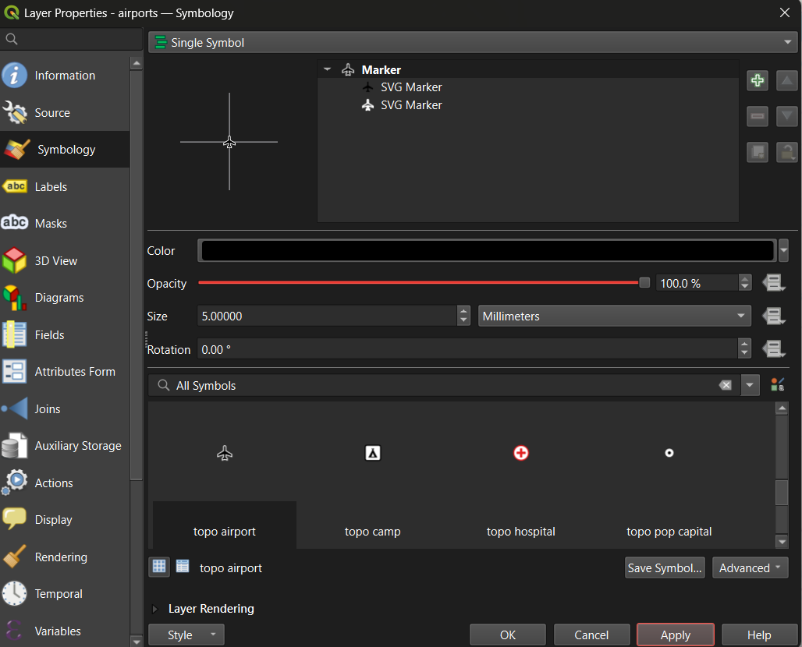
Tip: Set the Magnifier at the bottom of the Map Panel to 75% if the map feels too large for your screen.
Tip: To rename a layer (which also controls how it appears in the legend), right-click the layer → Properties → Source → Layer Name. Give it a clear, human-readable name before building your layout.
Step 3: Apply a Graduated Style (Optional — for numeric data)
Graduated symbology is useful when your data has a meaningful numeric
field. The QGIS sample data includes an elevation CSV
(elevp) in the csv folder of the same
repository. Download it and try:
- Load the CSV as a delimited text layer (see Part 3, Step 2 below for the full method).
- Open its Symbology → select Graduated.
- Choose the elevation field as the value column.
- Select a sequential color ramp (light to dark).
- Adjust the number of classes and click Apply.
This is the same graduated approach you would use for a choropleth map of Census data or any other continuous numeric variable.
Part 3: Adding Different Data Types
Real-world GIS projects rarely use a single data source. This section covers the three most common ways to bring vector data into QGIS.
Method 1: Add a Downloaded Shapefile
This is the method covered in Part 1 Step 2 above. Use it for any shapefile you have downloaded to disk:
- Layer → Add Layer → Add Vector Layer
- Browse to the
.shpfile - Click Add
Alternatively, locate the folder containing your shapefiles in your
file explorer and drag the .shp file directly onto
the Layers Panel.
Method 2: Add a Geocoded CSV File (Point Data from Coordinates)
If you have a spreadsheet containing latitude and longitude columns,
QGIS can treat it as a point layer. We will use a UFO sightings dataset
for this example — download it from the shared Session 1a Google folder
(UFOreports_USonly_WorkshopLayer.csv) and save it to your
Session_1a folder.
- Click the Open Data Source Manager button in the toolbar (or Layer → Data Source Manager).
- Select Delimited Text in the left panel.
- In the File Name field, navigate to
UFOreports_USonly_WorkshopLayer.csv. - Confirm that File Format is set to CSV.
- Verify that the X field and Y field are set to the longitude and latitude columns respectively.
- Click Add, then close the dialog.
This creates a temporary point layer. If you want to keep it permanently, right-click the layer → Export → Save Features As… and save it as a shapefile or GeoPackage.
Method 3: Add Live Data via the QuickOSM Plugin
OpenStreetMap contains a vast, continuously updated collection of mapped features — roads, buildings, parks, universities, restaurants, and much more. The QuickOSM plugin lets you query this data directly from within QGIS without downloading anything manually.
Install the plugin first:
- Go to Plugins → Manage and Install Plugins…
- Search for QuickOSM and click Install Plugin.
- While you have the plugin manager open, also install NextGIS QuickMapServices — this gives you access to a much wider range of basemap options beyond OpenStreetMap.
Run a query:
- Go to Vector → QuickOSM → Quick Query.
- In the Preset field, type
universityand select facilities/education/universities. - In the In field, type
West Lafayette, IN. - Click Run Query. A polygon layer for Purdue University’s campus should appear on your map.
- Right-click the new layer → Properties → Symbology to adjust its color and transparency.
Try a second query: repeat the process with shops/food
in the Preset field and the same location. This returns footprints for
food stores around Purdue’s campus.
Part 4: Creating a Map Layout
The Print Layout is QGIS’s dedicated tool for building finished, export-ready maps. It is separate from the main map canvas — the main canvas is for exploration, the Print Layout is for publication.
Step 1: Open a New Layout
- Go to Project → New Print Layout (or click the New Print Layout icon in the toolbar).
- Give the layout a name and click OK.
- A new window will open with a blank white canvas representing your page.
Step 2: Add the Map Frame
- In the toolbar on the left side of the Layout window, click Add Item → Add Map.
- Draw a rectangle on the canvas by clicking and dragging. The current map view from your main canvas will appear inside the rectangle.
- Use the Item Properties panel on the right to lock the scale or adjust the extent if needed.
Step 3: Add All Required Map Elements
A complete, publication-ready map must include the following elements. Use the Add Item menu in the toolbar to insert each one:
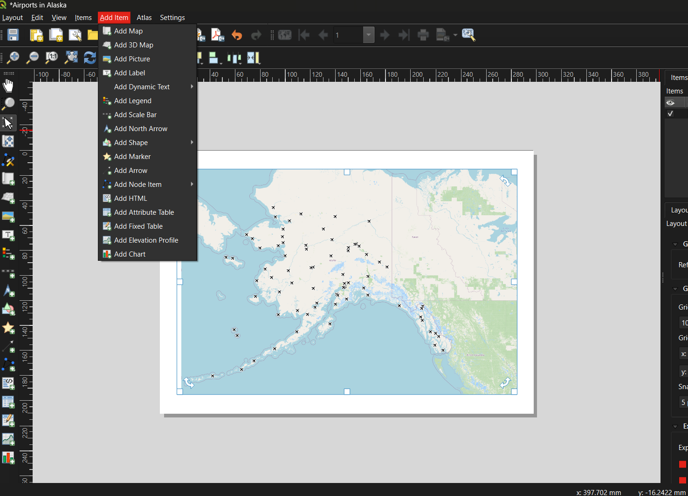
| Element | How to add | Notes |
|---|---|---|
| Title | Add Item → Add Label | Draw a text box at the top of the canvas; enter a descriptive title |
| Legend | Add Item → Add Legend | QGIS auto-populates from layer names — this is why renaming layers matters |
| Scale Bar | Add Item → Add Scale Bar | Choose units appropriate for your map extent |
| North Arrow | Add Item → Add North Arrow | Only strictly necessary if north is not obviously up |
| Data credit / metadata | Add Item → Add Label | Add at the bottom: your name, data sources, and date |
Step 4: Export the Layout
Once you are satisfied with the layout:
- Go to Layout → Export as Image (for PNG/JPEG) or Layout → Export as PDF.
- Accept the default settings and click OK.
- Return to the main QGIS window and save your project:
Project → Save (
.qgz).
Below is an example of a finished map created using this workflow — Alaska airports displayed as point symbols over an OpenStreetMap basemap:
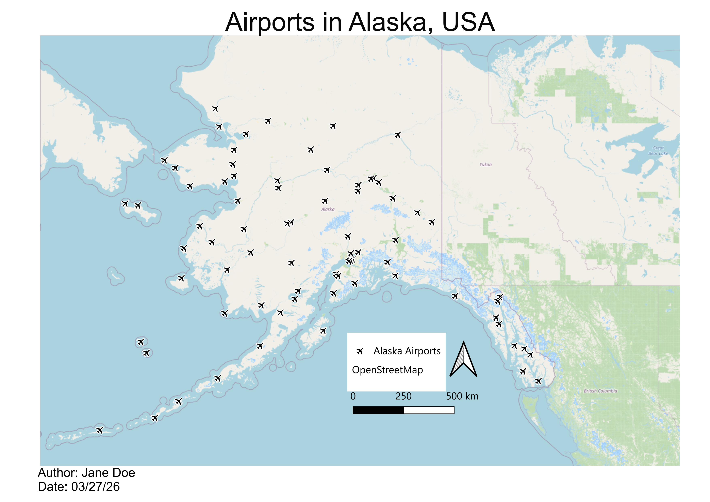
Common Beginner Mistakes
| Mistake | How to avoid it |
|---|---|
| Forgetting to save the project | Use Ctrl+S / Cmd+S frequently; save before every major step |
| Data layer hidden beneath the basemap | Check layer order in the Layers Panel; drag data layers above basemaps |
| Shapefile won’t load | Ensure all five supporting files (.dbf,
.prj, .shx, .cpg) are in the same
folder as the .shp
|
| Legend shows code names instead of readable labels | Rename layers before building the layout via Properties → Source → Layer Name |
| Map exports blank | Make sure the layout’s map frame is linked to the correct map canvas |
| Overcomplicating symbology | Start with Single Symbol; add complexity only when it communicates something specific |
Hands-On Exercise
Build a Multi-Layer Map of West Lafayette
In this exercise you will combine all three data-loading methods to build a multi-layer map.
Setup: Create a new QGIS project saved to your Session_1a folder.
Step 1 — Download shapefiles from Natural Earth
Go to naturalearthdata.com and read the homepage briefly to understand the data’s purpose, scale, and reliability. Then navigate to Downloads → Medium Scale Data and download the following:
From Cultural: - Admin-0 Country boundaries (polygon) - Admin-1 States and Provinces (polygon) - Populated Places (point)
From Physical: - Rivers, Lake Centerlines (line)
Save all files to your Session_1a folder and add them to your QGIS project.
Step 2 — Add UFO sighting data from a CSV
Download UFOreports_USonly_WorkshopLayer.csv from the
shared Session 1a Google folder. Use Layer → Data Source Manager
→ Delimited Text to add it as a point layer, setting the X and
Y fields to the longitude and latitude columns.
Step 3 — Add live OSM data
Use the QuickOSM plugin to query two features in
West Lafayette, IN: - facilities/education/universities (to
get Purdue University) - shops/food (to get food stores
near campus)
Style each layer with a distinct color and adjust transparency as needed.
Step 4 — Build a map layout
Turn off all layers except the Purdue campus polygon and the food stores layer. Open a new Print Layout and build a finished map that includes: - A descriptive title - A legend with readable layer names - A scale bar - A north arrow - A data credit noting your name, data sources, and today’s date
Step 5 — Export
Export your layout as both a PDF and a PNG image.
Reflect on Your First Map
- What was the most confusing step in the workflow? How did you resolve it?
- Look at your finished map — what would you change to make it clearer for someone unfamiliar with the area?
- How does working with live OSM data (QuickOSM) differ from working with a downloaded shapefile? What are the trade-offs of each approach?